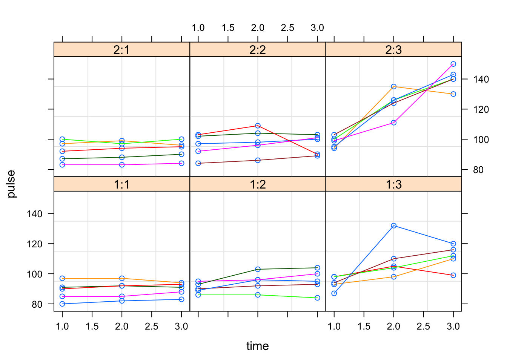

Exercise 10
Ex-1: Exercises and diet - repeated measurements
The data and some examples are found at statistics.ats.ucla.edu
The data called exer, consists of people who were randomly assigned to two different diets: low-fat and not low-fat and three different types of exercise: at rest, walking leisurely and running. Their pulse rate was measured at three different time points during their assigned exercise: at 1 minute, 15 minutes and 30 minutes.
Upon downloading the data, you can load and plot the data by

You will see six plots with heading’s like 2:1 which means diet=2 and exercises type=1. In each plot we have three repeated measurements for each of 5 people.
In these exercises you will be asked to answer some questions. Use the R-outputs to the extent your find it necessary.
- Below is a output from a linear model fitted to the data. State the model that has been fitted and the assumptions made. Which parametrization is used?
Call:
lm(formula = pulse ~ (time + diet + exertype)^2, data = exer)
Residuals:
Min 1Q Median 3Q Max
-19.2333 -5.0875 0.6833 4.9125 26.9333
Coefficients:
Estimate Std. Error t value Pr(>|t|)
(Intercept) 88.4000 2.1004 42.086 < 0.0000000000000002 ***
time 5.6500 0.9723 5.811 0.000000121 ***
diet(1) -0.1778 2.1004 -0.085 0.932761
exertype(1) 1.2333 2.9705 0.415 0.679110
exertype(2) 4.0000 2.9705 1.347 0.181917
time:diet(1) -1.7833 0.9723 -1.834 0.070357 .
time:exertype(1) -5.0500 1.3751 -3.673 0.000432 ***
time:exertype(2) -4.2500 1.3751 -3.091 0.002747 **
diet(1):exertype(1) 2.2444 1.1227 1.999 0.048995 *
diet(1):exertype(2) 2.0111 1.1227 1.791 0.077034 .
---
Signif. codes: 0 '***' 0.001 '**' 0.01 '*' 0.05 '.' 0.1 ' ' 1
s: 7.532 on 80 degrees of freedom
Multiple R-squared: 0.769,
Adjusted R-squared: 0.7431
F-statistic: 29.6 on 9 and 80 DF, p-value: < 0.00000000000000022 Analysis of Variance Table
Response: pulse
Df Sum Sq Mean Sq F value Pr(>F)
time 1 1915.4 1915.4 33.7660 0.00000012138 ***
diet 1 1261.9 1261.9 22.2459 0.00001001526 ***
exertype 2 8326.1 4163.0 73.3908 < 0.00000000000000022 ***
time:diet 1 190.8 190.8 3.3639 0.070357 .
time:exertype 2 2601.1 1300.6 22.9276 0.00000001345 ***
diet:exertype 2 815.8 407.9 7.1905 0.001343 **
Residuals 80 4537.9 56.7
---
Signif. codes: 0 '***' 0.001 '**' 0.01 '*' 0.05 '.' 0.1 ' ' 1We can write the model in this way:
\[ \begin{aligned} \mathtt{pulse}_{ijkl} = \mu + &\beta\;\mathtt{time}_{l} + \mathtt{diet}_j + \mathtt{exertype}_k + \beta\;\mathtt{time}_{l}\cdot\mathtt{exertype}_{k} + \\ &\beta\;\mathtt{time}_{l}\cdot\mathtt{diet}_{jl} + \mathtt{diet}_j\cdot\mathtt{exertype}_k + \epsilon_{ijkl} \end{aligned} \]
Where we assume that the errors are identically and independently distributed (iid) as:
\(\epsilon_{ijkl} \sim N(0, \sigma^2)\) for all
- \(j = 1, 2\) (For Diet)
- \(k = 1, 2, 3\) (For Exercise Type) and
- \(l = 1, 2, 3\) (For individual time points)
In orther words it is a linear model with main effects of time, diet and exercise type, plus all second-order interactions between these.
Remark: From the ANOVA-table output we may observe that time has only one degree of freedom (thus one parameter is estimated for the effect of time) which means that time is assumed to be a continuous effect. If time alternatively was modelled as a categorical variable, it would have had 2 degrees of freedom in the ANOVA table (the number of time-levels minus one).
Further, a sum-to-zero parametrization is used for all categorical effects, for instance, we assume that the two diet effects sum to zero, hence the estimate of diet(2) is: diet(2) = -diet(1) = -(-0.1778) = 0.1778
The three exercise type effects likewise, that is: exertype(3) = -(exertype(1) + exertype(2)) = -(1.2333 + 4.0000) = -5.233
For interactions between categorical effects, the effects sum to zero if we keep one variable fixed at one level and sum across the levels of the other. E.g. for diet 1 the interaction effects with exercise types 1, 2 and 3 sum to zero, and so on. That is: we would from the ouput find:
diet(1):exertype(3) = -(diet(1):exertype(1) + diet(1):exertype(2)) = -(2.2444 + 2.0111) = -4.256
However, it also means that for fixed level 3 for exercise type, the diet effects should sum to zero. That is:
diet(2):exertype(3) = - diet(1):exertype(3) = -(-4.256) = 4.256
For interactions between the continuous variable time and a catergorical variable, the effects sum to zero across the levels of the categorical variable if we keep time fixed.
Hence: time:diet(2) = -time:diet(1) = -(-1.783) = 1.783
and time:exertype(3) = -(time:exertype(1) + time:exertype(2)) = -(-5.05 - 4.25)= 9.30
- Write up the fitted model for pulse as a function of time for the special case of
diet=1andexertype=1. Do the same fordiet=2andexertype=3.
The fitted model for diet=1 and exertype=1 is found directly by selecting the estimated coefficients from the output for which diet=1 and exertype=1:
\[ \begin{aligned} \hat{\mathtt{pulse}} &= 88.4 + 5.65 \mathtt{time} -0.178 + 1.233-1.783 \mathtt{time} -5.05 \mathtt{time} + 2.244 \\ &= 91.699 -1.183 \mathtt{time} \end{aligned} \]
Similarly, using the estimates found above through the sum-to-zero parametrizations, the fitted model for diet=2 and exertype=3 becomes:
\[ \begin{aligned} \hat{\mathtt{pulse}} &= 87.6 + 16.733 \mathtt{time} \end{aligned} \]
- What is the estimated noise variance? Give an interpretation of the estimated time effect (5.65) for a person with limited statistics knowledge.
The estimated noise variance is \(\hat{\sigma}^{2}\) = MSE= 56.724. The estimate of time variable which is 5.65 refers to the average change in pulse per unit increase in time, for persons being part of this study.
- The anova table gives significant interaction between time and exertype. Use the graphs above to explain why there is an interaction between these two variables.
Since the interaction term is significant, for each individual, the line representing the pulse measured at three time points are inclined different (not parallel) which also says that the pulse for an individual under different exercise type changes differently over time.
- Are there any problems related to the model assumptions for the model fitted in a. ?
Model 1 is based on the assumption that all error terms (and hence all observations) are independent. Since we know that there are three repeated observations on each person, we should expect that observations made on the same person are dependent. For instance, a person with low puls at time 1 is expected to also have (relatively) low puls at time points2 and 3. The Figure below confirms this tendency, especially for exercise types 1 and 2. We see that the residuals of any given person tend to be either above or below the fitted lines.

- Another analysis was performed as shown below. Describe the difference between mod2 and mod1. Are there any extra parameters estimated? Why is mod2 probably a more reasonable model than mod1?
Linear mixed-effects model fit by REML
Data: exer
AIC BIC logLik
609.9181 638.5024 -292.9591
Random effects:
Formula: ~1 | id
(Intercept) Residual
StdDev: 3.789659 6.618067
Fixed effects: pulse ~ (time + diet + exertype)^2
Value Std.Error DF t-value p-value
(Intercept) 88.40000 1.9711141 56 44.84773 0.0000
time 5.65000 0.8543887 56 6.61291 0.0000
diet1 -0.17778 1.9711141 24 -0.09019 0.9289
exertype1 1.23333 2.7875763 24 0.44244 0.6621
exertype2 4.00000 2.7875763 24 1.43494 0.1642
time:diet1 -1.78333 0.8543887 56 -2.08726 0.0414
time:exertype1 -5.05000 1.2082881 56 -4.17947 0.0001
time:exertype2 -4.25000 1.2082881 56 -3.51737 0.0009
diet1:exertype1 2.24444 1.3895111 24 1.61528 0.1193
diet1:exertype2 2.01111 1.3895111 24 1.44735 0.1607
Correlation:
(Intr) time diet1 exrty1 exrty2 tm:dt1 tm:xr1 tm:xr2
time -0.867
diet1 0.000 0.000
exertype1 0.000 0.000 0.000
exertype2 0.000 0.000 0.000 -0.500
time:diet1 0.000 0.000 -0.867 0.000 0.000
time:exertype1 0.000 0.000 0.000 -0.867 0.433 0.000
time:exertype2 0.000 0.000 0.000 0.433 -0.867 0.000 -0.500
diet1:exertype1 0.000 0.000 0.000 0.000 0.000 0.000 0.000 0.000
diet1:exertype2 0.000 0.000 0.000 0.000 0.000 0.000 0.000 0.000
dt1:x1
time
diet1
exertype1
exertype2
time:diet1
time:exertype1
time:exertype2
diet1:exertype1
diet1:exertype2 -0.500
Standardized Within-Group Residuals:
Min Q1 Med Q3 Max
-2.57649557 -0.56594356 -0.03799568 0.45827814 3.47522587
Number of Observations: 90
Number of Groups: 30 Model 2 assumes a random intercept for each individual and the random intercept is assumed to follow \(N(0, \sigma_\alpha^2)\). So, \(\sigma_\alpha\) is an extra parameters to be estimated. From model 2, we can obtain a separate fitted line for each individual, which is more resonable and which take better into account that we may have dependence between observations made on the same person.

- For models containing random effects there is a function
ranefin thenlme-package which displays the predicted random effects. The first 5 random effects are shown below with “rowname” equal to the id number of a given person. Explain what it means that person with id=4 has a random effect of -3.802.
(Intercept)
4 -3.8018198
1 -1.6529651
5 0.9917791
2 1.1570756
3 3.3059303This means that person with id=4 has on average 3.802 units lower pulse than the average person, keeping all other variables fixed.
- A third model was analysed by:
Linear mixed-effects model fit by REML
Data: exer
AIC BIC logLik
611.2159 642.1823 -292.608
Random effects:
Formula: ~1 | id
(Intercept) Residual
StdDev: 1.449581 7.474896
Correlation Structure: AR(1)
Formula: ~1 | id
Parameter estimate(s):
Phi
0.254466
Fixed effects: pulse ~ (time + diet + exertype)^2
Value Std.Error DF t-value p-value
(Intercept) 88.23008 2.0987530 56 42.03929 0.0000
time 5.65000 0.9332387 56 6.05419 0.0000
diet1 -0.19734 2.0987530 24 -0.09403 0.9259
exertype1 1.39707 2.9680849 24 0.47070 0.6421
exertype2 4.04016 2.9680849 24 1.36120 0.1861
time:diet1 -1.78333 0.9332387 56 -1.91091 0.0611
time:exertype1 -5.05000 1.3197988 56 -3.82634 0.0003
time:exertype2 -4.25000 1.3197988 56 -3.22019 0.0021
diet1:exertype1 2.24547 1.3572224 24 1.65446 0.1111
diet1:exertype2 2.05539 1.3572224 24 1.51441 0.1430
Correlation:
(Intr) time diet1 exrty1 exrty2 tm:dt1 tm:xr1 tm:xr2
time -0.889
diet1 0.000 0.000
exertype1 0.000 0.000 0.000
exertype2 0.000 0.000 0.000 -0.500
time:diet1 0.000 0.000 -0.889 0.000 0.000
time:exertype1 0.000 0.000 0.000 -0.889 0.445 0.000
time:exertype2 0.000 0.000 0.000 0.445 -0.889 0.000 -0.500
diet1:exertype1 0.000 0.000 0.000 0.000 0.000 0.000 0.000 0.000
diet1:exertype2 0.000 0.000 0.000 0.000 0.000 0.000 0.000 0.000
dt1:x1
time
diet1
exertype1
exertype2
time:diet1
time:exertype1
time:exertype2
diet1:exertype1
diet1:exertype2 -0.500
Standardized Within-Group Residuals:
Min Q1 Med Q3 Max
-2.4699789 -0.6560689 0.1075098 0.6337954 3.5946016
Number of Observations: 90
Number of Groups: 30 How does mod 3 differ from mod2 in its model assumptions? Are there any extra parameters estimated?
Apart from all the assumption in Model 2, Model 3 also assumes a first order autocorrelation between the error terms. In simple words, observation far from each other tend to be less correlated.
- Which of mod2 and mod3 is to prefer. Explain why based on the output below.
Model df AIC BIC logLik Test L.Ratio p-value
mod2 1 12 609.9181 638.5024 -292.9591
mod3 2 13 611.2159 642.1823 -292.6080 1 vs 2 0.7021942 0.402The anova() function used here returns the result of a likelihood-ratio test (a chi-square test). The null-hypothesis for the test is that the two models fit the data equally well. The p-value is large, and we retain the null-hypothesis. Hence, the extra refinement introduced in mod3 is not improving the model fit significantly, and we may keep the simpler mod2.